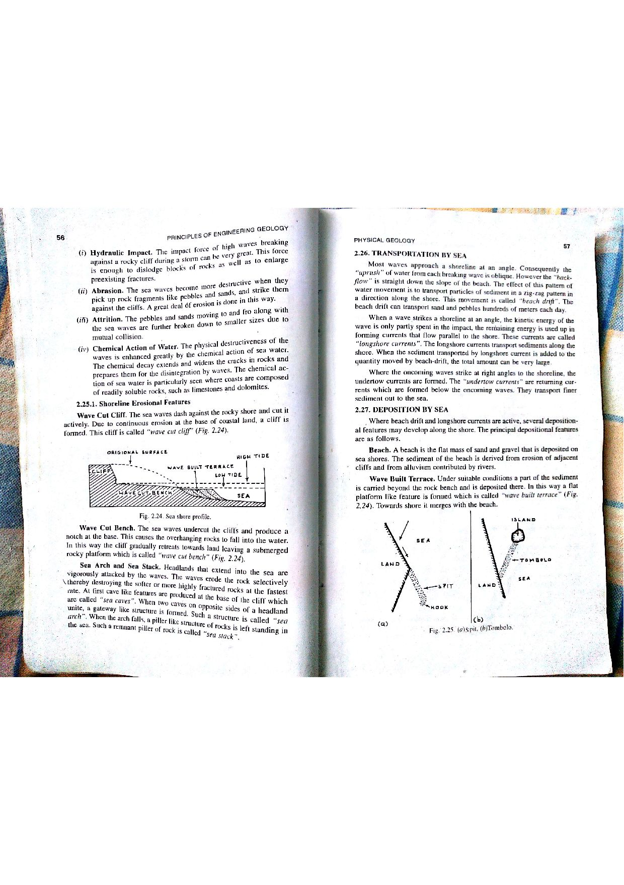

Q147: Cooper-Jacob Straight-Line Method: Mathematical Limits of Validity ($u \le 0.05$)
In 1935, Charles V. Theis derived the exact non-equilibrium equation for transient radial groundwater flow to a pumping well in a confined, homogeneous, isotropic aquifer:
Here, $s$ is drawdown, $Q$ is constant pumping discharge, $T$ is aquifer transmissivity, $S$ is storativity, $r$ is radial distance to the observation well, $t$ is elapsed pumping time, and $W(u)$ is the exponential integral (the Theis Well Function), expandable as an infinite convergent Taylor-Maclaurin series:

The Cooper-Jacob Straight-Line Formula (1946)
In 1946, Hilton H. Cooper and C.E. Jacob noted that when the dimensionless argument $u$ is sufficiently small ($u \le 0.05$ or $u \le 0.01$), all higher-order polynomial terms in the expansion ($u - u^2/4 + \dots$) become negligibly small and can be dropped without significant loss of accuracy:
Substituting this into the drawdown equation gives the Cooper-Jacob Semilog Equation:
Plotting drawdown $s$ on an arithmetic scale against elapsed time $t$ on a logarithmic scale yields a straight line with slope $\Delta s$ (drawdown per log cycle of time):

The Fundamental Limit of Validity
The Cooper-Jacob straight-line approximation is mathematically valid if and only if:
Conversely, the Cooper-Jacob method CANNOT BE USED whenever:
Deconstruction of the Inequality
Examining the algebraic structure of the fraction $u = \frac{r^2 S}{4 T t}$ reveals exactly what physical test conditions cause $u$ to exceed $0.05$:
- Condition (i) — When the pump test is of SHORT duration ($t$ is small):
Because elapsed pumping time $t$ resides in the denominator, when $t$ is small (during early test stages or short-duration pumping), the quotient $\frac{r^2 S}{4 T t}$ becomes large ($u \gg 0.05$). The higher-order terms in the series cannot be neglected, the semilog plot is non-linear and curved, and applying Cooper-Jacob results in catastrophic errors. (Method cannot be used!) - Condition (iii) — When the observation well is situated FAR AWAY from the main well ($r$ is large):
Because radial distance $r$ resides in the numerator as a squared term ($r^2$), any increase in $r$ dramatically magnifies $u$. For a distant piezometer, the cone of depression has not sufficiently developed, making $u \gg 0.05$ throughout most or all of the test. (Method cannot be used!)
Why Conditions (ii) and (iv) FAVOR the Cooper-Jacob Method
- Condition (ii) — When the pump test is of LONG duration ($t$ is large): As $t \to \infty$, the denominator grows enormous, driving $u \to 0$ ($u \ll 0.01$). This makes Cooper-Jacob maximally accurate and fully valid!
- Condition (iv) — When the observation well is situated NEAR to the main well ($r$ is small): A small radial distance $r$ minimizes the $r^2$ numerator, ensuring that $u \le 0.01$ is achieved almost immediately after pumping begins. This makes Cooper-Jacob ideally suited.
The Cooper-Jacob method CANNOT be used under (i) short duration and (iii) distant observation well, because both conditions force $u = \frac{r^2 S}{4 T t} > 0.05$.
| Dimensionless Variable $u$ | Exact Theis $W(u)$ | Cooper-Jacob Approximation $\ln(2.25 / u)$ | Truncation Error (%) | Applicability Status |
|---|---|---|---|---|
| $0.001$ | $6.3315$ | $6.3324$ | $+0.01\%$ | Perfect |
| $0.010$ | $4.0379$ | $4.0395$ | $+0.04\%$ | Excellent ($< 1\%$ error) |
| $0.050$ | $2.4679$ | $2.5157$ | $+1.94\%$ | Standard Cutoff Limit ($< 2\%$ error) |
| $0.100$ | $1.8229$ | $1.9363$ | $+6.22\%$ | Marginal (Error $> 5\%$) |
| $0.200$ | $1.2227$ | $1.3787$ | $+12.76\%$ | INVALID (Error $> 12\%$) |
| $0.500$ | $0.5598$ | $0.7675$ | $+37.10\%$ | FATALLY INVALID (Error $> 37\%$) |
(i) When the pump test is of short duration,
(ii) When the pump test is of long duration,
(iii) When the observation well is situated far away from the main well,
(iv) When the observation well is situated nearer to the main well.
Choose the correct set of answer from the following :
Option (A) combines the exact two physical conditions that violate the mathematical validity criterion of the Cooper-Jacob semilog method ($u = \frac{r^2 S}{4 T t} \le 0.05$):
- Condition (i) — Short Duration ($t$ small): When the pump test has run for only a brief period, $t$ is small, causing the denominator $4 T t$ to be small, driving $u > 0.05$. The drawdown curve on semilog paper is strongly concave and has not yet straightened.
- Condition (iii) — Distant Observation Well ($r$ large): Because distance enters as $r^2$, locating the piezometer far away magnifies the numerator enormously, forcing $u > 0.05$. For distant wells, hours or days of pumping are needed before the straight-line approximation becomes valid.
Because both (i) and (iii) invalidate the straight-line assumption, Option (A) is the indisputably correct answer.
Option (B) includes Condition (ii) ("When the pump test is of long duration"). Long duration means $t$ is large, which drives $u = \frac{r^2 S}{4 T t} \to 0$ ($u \ll 0.01$). This is precisely the operational condition under which the Cooper-Jacob method is most reliable, accurate, and recommended! Because Condition (ii) is a condition of validity rather than invalidity, Option (B) is incorrect.
Option (C) pairs Condition (ii) (long duration) with Condition (iv) (observation well situated near to the main well). This represents the gold standard, ideal operational domain for applying the Cooper-Jacob method: small $r$ minimizes the numerator while large $t$ maximizes the denominator, producing $u < 0.001$ where truncation error is less than $0.01\%$. Claiming the method cannot be used under these conditions is completely contrary to hydrogeologic science.
While Condition (i) is an invalidating condition, Condition (iv) ("When the observation well is situated nearer to the main well") dramatically assists validity because a small $r$ keeps $r^2$ small, helping $u$ drop below $0.05$ very rapidly. Therefore, Condition (iv) is not a condition under which the method cannot be used, refuting Option (D).
| Analytical Method | Mathematical Formulation | Plot Coordinates | Validity Limits / Constraints | Best Field Domain |
|---|---|---|---|---|
| Theis Type Curve (1935) | $$s = \frac{Q}{4 \pi T} W(u)$$ | $\log s$ vs $\log(t / r^2)$ | Universal: Valid for all values of $u$ ($0 < u < \infty$); requires curve superposition. | Short-duration tests, early pumping data, and distant observation wells ($u > 0.05$). |
| Cooper-Jacob Semilog (1946) | $$s = \frac{2.303 Q}{4 \pi T} \log_{10}\left(\frac{2.25 T t}{r^2 S}\right)$$ | $s$ vs $\log t$ or $s$ vs $\log r$ | Restricted: Valid ONLY when $u \le 0.05$ (fails when $t$ is small or $r$ is large). | Late-time pumping data ($t > t_{\min}$), near observation wells, and single-well production tests. |
| Chow Method (1952) | $$F(u) = \frac{s}{\Delta s}, \quad W(u) = 4 \pi \frac{s \cdot T}{Q}$$ | $s$ vs $\log t$ nomograph | Valid for all $u$, but avoids curve matching by calculating slope $F(u)$ at any chosen point. | Quick parameter estimation without requiring full Theis curve overlay sheets. |
A pumping test is conducted in a confined aquifer with Transmissivity $T = 360\text{ m}^2/\text{day}$ and Storativity $S = 2.0 \times 10^{-4}$. An observation well is located at distance $r = 60\text{ m}$ from the pumping well. Calculate the minimum elapsed pumping time ($t_{\min}$) in minutes after which the Cooper-Jacob method can be legitimately applied under the standard criterion $u \le 0.05$.
1. Validity threshold formula: $$u = \frac{r^2 S}{4 T t} \le 0.05 \implies t \ge \frac{r^2 S}{4 T \times 0.05} = \frac{r^2 S}{0.20 T} = \frac{5 r^2 S}{T}$$ 2. Substitute given values: $$t_{\min} = \frac{5 \times (60\text{ m})^2 \times (2.0 \times 10^{-4})}{360\text{ m}^2/\text{day}} = \frac{5 \times 3600 \times (2.0 \times 10^{-4})}{360} = \frac{3.6}{360} = 0.010\text{ days}$$ 3. Convert to minutes: $$t_{\min} = 0.010\text{ days} \times 1440\text{ min/day} = 14.4\text{ minutes}$$ Conclusion: For the first $14.4\text{ minutes}$ of pumping, $u > 0.05$ and Cooper-Jacob CANNOT be used. Only time-drawdown data collected after $t \ge 14.4\text{ min}$ may be fitted to the straight line.
Due to mechanical failure, a pump test must be terminated after only $t = 30\text{ minutes} = 0.02083\text{ days}$. The aquifer has $T = 500\text{ m}^2/\text{day}$ and $S = 1.5 \times 10^{-4}$. Calculate the maximum radial distance ($r_{\max}$) of an observation well that can be analyzed using the Cooper-Jacob method ($u \le 0.05$).
1. Rearrange $u \le 0.05$ for radial distance $r$: $$r^2 \le \frac{0.05 \times 4 T t}{S} = \frac{0.20 T t}{S}$$ $$r_{\max} = \sqrt{\frac{0.20 \times 500\text{ m}^2/\text{day} \times 0.02083\text{ days}}{1.5 \times 10^{-4}}} = \sqrt{\frac{2.083}{1.5 \times 10^{-4}}} = \sqrt{13,886.7} \approx 117.8\text{ meters}$$ Any observation well located beyond $118\text{ meters}$ has $u > 0.05$ and cannot be interpreted via the Cooper-Jacob method for this short test.
A hydrogeologist uses the Cooper-Jacob equation to estimate drawdown at a point where $u = 0.20$. Exact Theis well function is $W(0.20) = 1.2227$. (a) Calculate the Cooper-Jacob approximation $W_{\text{CJ}} = \ln(2.25 / 0.20)$. (b) Determine the percentage overestimation error.
1. Cooper-Jacob approximation: $$W_{\text{CJ}} = \ln\left(\frac{2.25}{0.20}\right) = \ln(11.25) \approx 2.4204 - 0.5772 = 1.3787$$ 2. Error calculation: $$\text{Absolute Error} = 1.3787 - 1.2227 = +0.1560$$ $$\text{Percentage Error} = \left(\frac{0.1560}{1.2227}\right) \times 100\% \approx +12.76\%$$ Using Cooper-Jacob when $u = 0.20$ overestimates drawdown by nearly $13\%$, leading to severe errors in calculated aquifer transmissivity.
A well is pumped at $Q = 1800\text{ m}^3/\text{day}$. An observation well at $r = 40\text{ m}$ produces a semilog time-drawdown plot whose valid straight-line portion ($u \le 0.05$) yields a drawdown per log cycle of $\Delta s = 1.12\text{ m}$ and intersects the zero-drawdown axis at $t_0 = 1.8\text{ minutes} = 1.25 \times 10^{-3}\text{ days}$. Calculate: (a) Transmissivity ($T$), and (b) Storativity ($S$).
1. Transmissivity: $$T = \frac{2.303 Q}{4 \pi \Delta s} = \frac{2.303 \times 1800}{4 \times 3.14159 \times 1.12} = \frac{4145.4}{14.074} \approx 294.54\text{ m}^2/\text{day}$$ 2. Storativity: $$S = \frac{2.25 T t_0}{r^2} = \frac{2.25 \times 294.54 \times (1.25 \times 10^{-3})}{40^2} = \frac{0.8284}{1600} \approx 5.18 \times 10^{-4}$$
For the test in Problem 4 ($T = 294.54\text{ m}^2/\text{day}$, $S = 5.18 \times 10^{-4}$, $r = 40\text{ m}$), verify whether drawdown recorded at $t = 5\text{ minutes}$ ($0.00347\text{ days}$) can be included in the Cooper-Jacob straight line.
1. Compute $u$ at $t = 5\text{ minutes}$: $$u = \frac{r^2 S}{4 T t} = \frac{(40)^2 \times (5.18 \times 10^{-4})}{4 \times 294.54 \times 0.00347} = \frac{1600 \times (5.18 \times 10^{-4})}{4.088} = \frac{0.8288}{4.088} \approx 0.2027$$ 2. Evaluate criterion: $$u = 0.2027 > 0.05$$ Conclusion: Because $u > 0.05$, the 5-minute data point MUST BE EXCLUDED from the straight line fit. The minimum valid time is $t_{\min} = \frac{5 r^2 S}{T} = \frac{5 \times 0.8288}{294.54} = 0.01407\text{ days} = 20.3\text{ minutes}$.
Explain why the Cooper-Jacob straight line method fails in unconfined aquifers during intermediate pumping times ($10\text{ min} < t < 4\text{ hours}$), even though $t$ appears sufficiently large.
1. The Cooper-Jacob method assumes strictly horizontal, 2-dimensional radial flow with constant storativity $S$.
2. In an unconfined aquifer during intermediate pumping times, delayed gravity drainage occurs as pore water drains vertically down from the descending capillary fringe.
3. This creates strong vertical flow components ($v_z \ne 0$) and a temporary flattening (plateau) in the drawdown curve where drawdown ceases to follow a logarithmic line.
4. Only after late time ($t > 4\text{ hours}$), when vertical gradients vanish and full specific yield ($S_y$) is mobilized, does a second, parallel Cooper-Jacob straight line emerge.
During a Cooper-Jacob pumping test, the initial straight line slope is $\Delta s_1 = 0.80\text{ m}$. At $t = 120\text{ minutes}$, the cone of depression intersects a planar impermeable normal fault. (a) What will be the new slope $\Delta s_2$ of the semilog straight line at late time? (b) Explain the mathematical cause using image well theory.
1. By Image Well Theory, an impermeable barrier boundary is mathematically equivalent to placing an imaginary discharge well pumping at identical rate $+Q$ located symmetrically across the fault barrier.
2. At late time, both real and image wells contribute equal drawdown to the observation well: $$s_{\text{total}} = s_{\text{real}} + s_{\text{image}} = \frac{2.303 Q}{4 \pi T} \log(t) + \frac{2.303 Q}{4 \pi T} \log(t) = \frac{2.303 (2Q)}{4 \pi T} \log(t)$$ 3. The slope exactly doubles: $$\Delta s_2 = 2 \times \Delta s_1 = 2 \times 0.80\text{ m} = 1.60\text{ meters per log cycle}$$
If the cone of depression intersects a fully penetrating perennial river instead of an impermeable fault, describe the behavior of the Cooper-Jacob semilog drawdown curve at late time.
1. An open surface water body acts as a constant-head recharge boundary ($s = 0$ along the riverline).
2. By image well theory, this is modeled by an imaginary recharge well injecting water at rate $-Q$.
3. At late time, the recharge cancels all further expansion of the cone of depression. Drawdown stabilizes to a steady-state value ($ds/dt = 0$), and the slope of the semilog curve becomes zero (horizontal straight line).